Miss Influencer Hungary
Az országos verseny győztese.
Egyedi hang. Erős jelenlét. Több világ, egy karakter. A DJ-pulttól az országos televízióig — és azon túl.
Szőke Rebeka tartalomgyártóként és streamerként vált ismertté, 2023-ban megnyerte a Miss Influencer Hungary versenyt. Televíziós jelenléte mellett ma a zenére épít: Sz_Becca néven DJ-ként és énekesként is aktív.
A produkció kulcsa a DJ-szett és az élő vokál találkozása. Együttműködéseknél ez többféle találkozási pontot kínál: színpadot, social tartalmat, és közvetlen közönségkapcsolatot.
RTL hivatalos profil ↗Az országos verseny győztese.
DJ-szettek élő énekes jelenléttel.
Képernyős mérföldkövek és országos láthatóság — közvetlenül ellenőrizhető forrásokra hivatkozva.
Saját vokálok, közös kiadványok, klubhangulat és egy folyamatosan épülő zenei identitás. Válassz ki egy megjelenést a közvetlen meghallgatáshoz.


DJ-fellépések szervezése és egyeztetése.
A DJ-szett és az élő ének közös produkciója kluboknak, fesztiváloknak, márkaeseményeknek. A színpadon nem csupán a tracklista, hanem az előadó is főszerepet kap.
Zenei szett integrált élő énekes részekkel.
Klub, fesztivál, privát és márkarendezvény — egyedi egyeztetéssel.
Az előadás videós highlightokra és social aktivációkra is építhető.
Gaming, streaming és social videók: más tartalomformátumok, más fogyasztási helyzetek. A kreatív lehetőség az, hogy egy márka a közösségi jelenlétben természetes szerepet kapjon.
Élő termékbemutató, kihívás vagy márkás adáselem — a tényleges csatornaadatok jóváhagyása után.
Reels, short-form, backstage és kampánysorozatok.
A következő adatok csak hiteles platform-insightból származnak. Minden érték mellé a mérési időszakot is feltüntetjük.
Három együttműködési keret, amelyek kreatív brief, célcsoport és időtartam alapján személyre szabhatók.
Zene, divat, márkák és személyes pillanatok – válogatás az Instagramról.
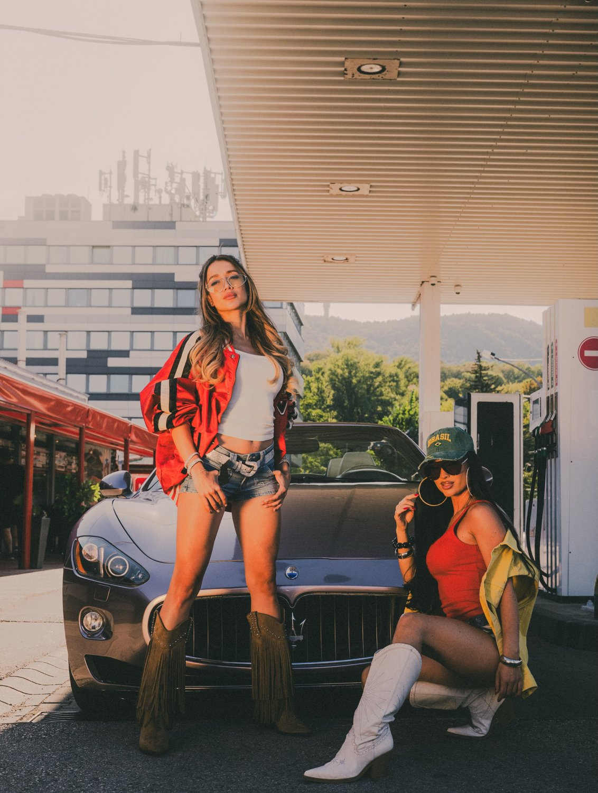
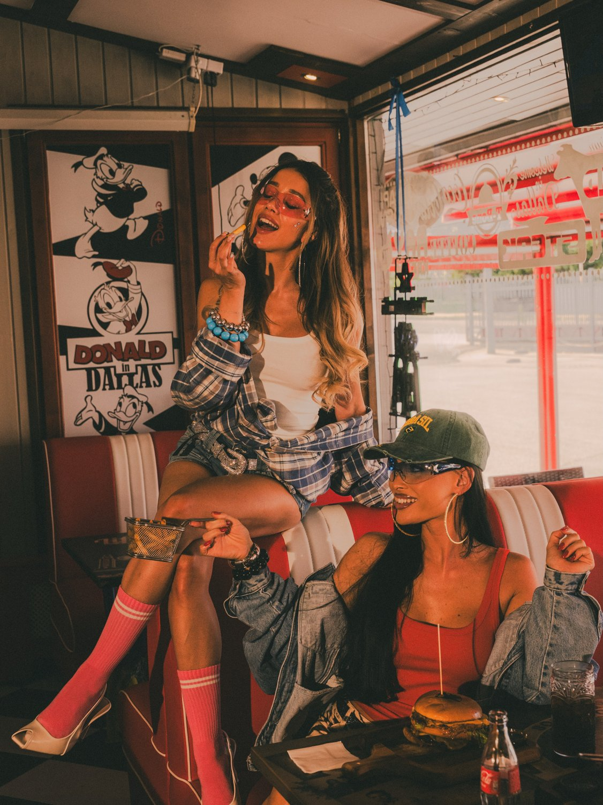
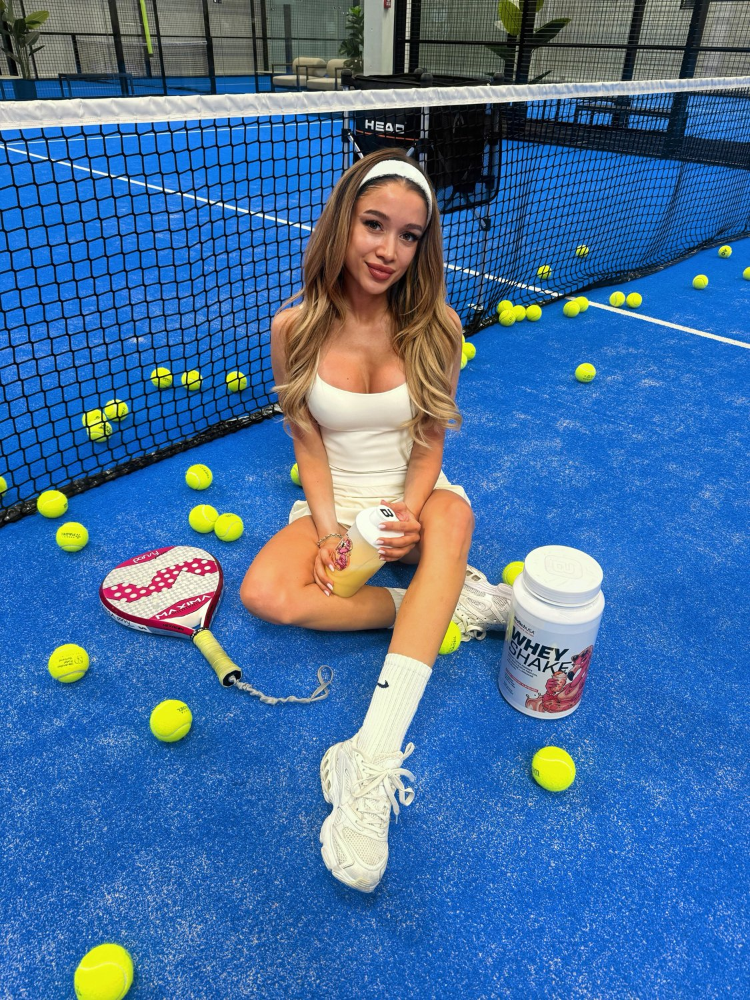
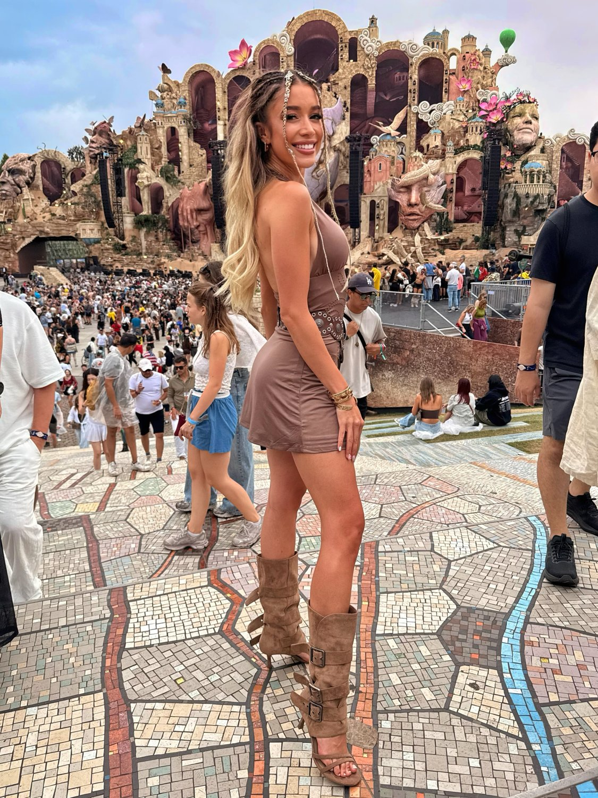
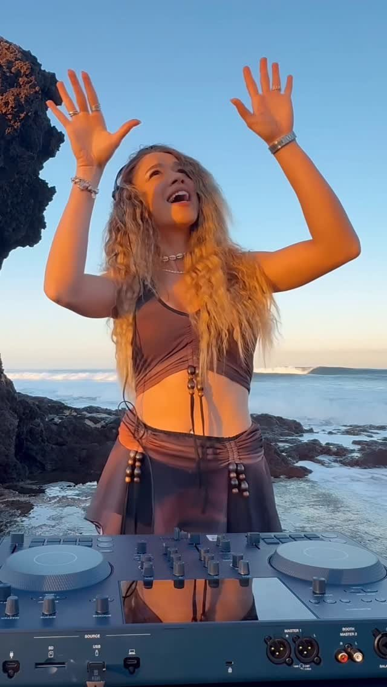
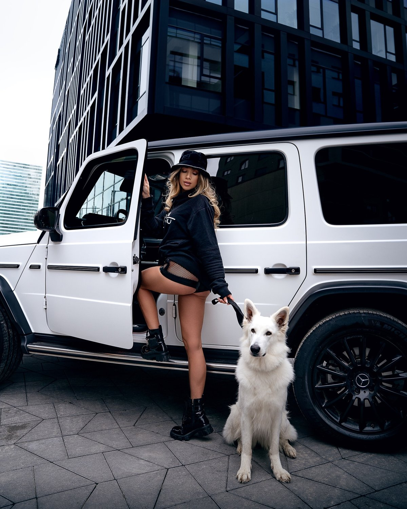
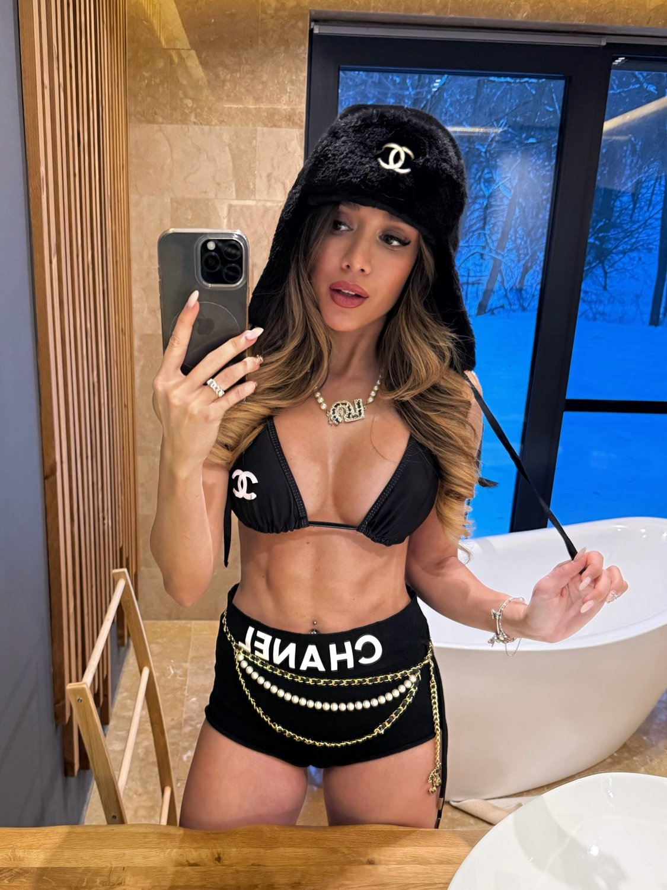
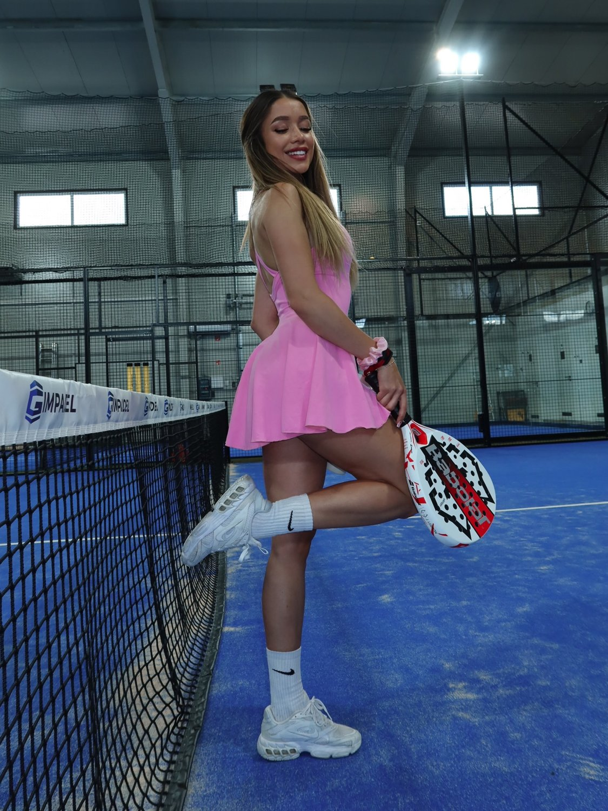
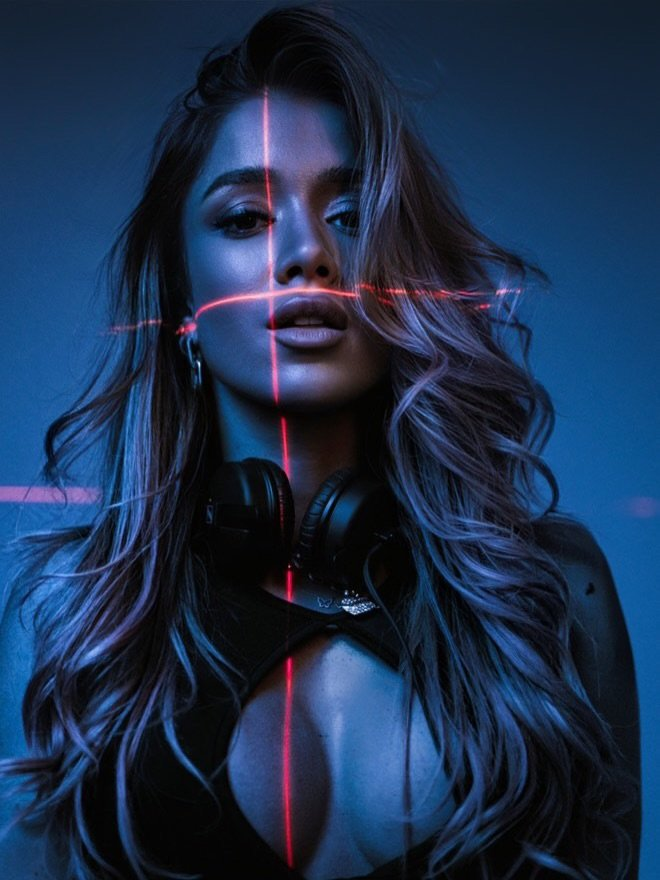
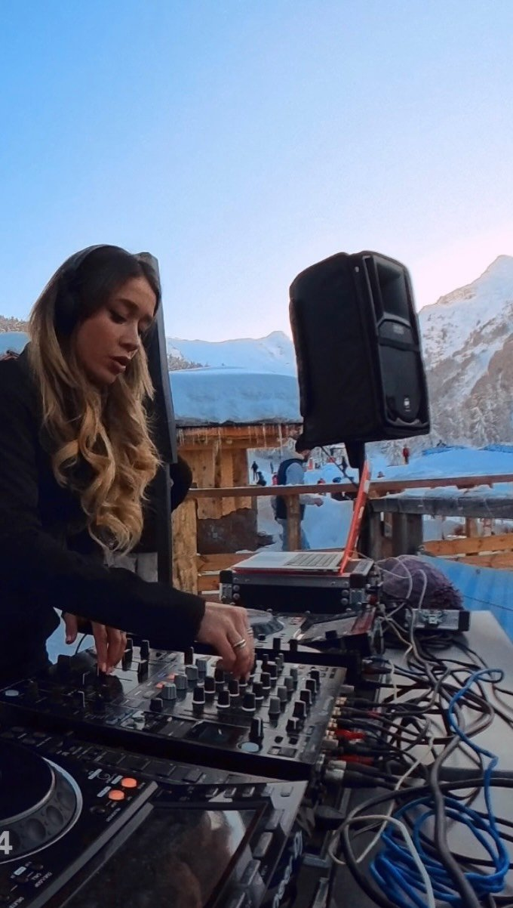
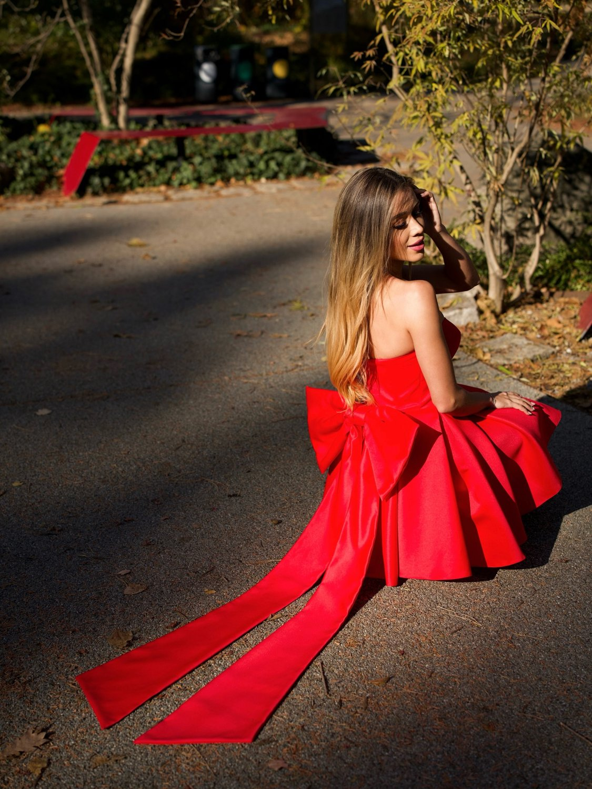
Szerkesztőségi és hivatalos források, egy kattintással megnyitható cikkekkel.
Fellépés, videós kampány, streaming-integráció vagy hosszabb távú márkakapcsolat — a részleteket a projekt briefje alapján lehet pontosítani.
Az itt szereplő formátumok ajánlati lehetőségek, nem kész műszaki vagy árazási vállalások.
A következő kampány, fellépés vagy kreatív együttműködés egy beszélgetéssel kezdődik.